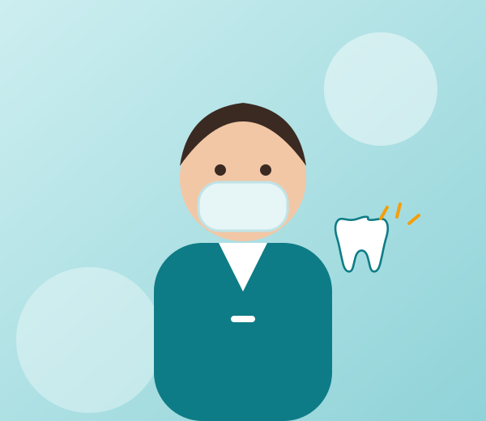
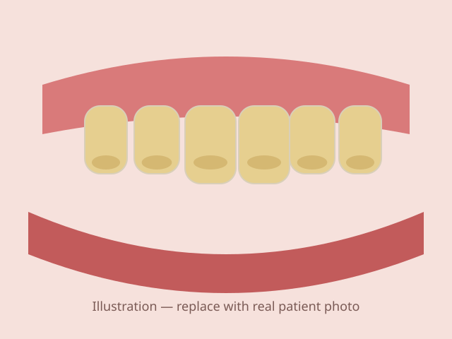
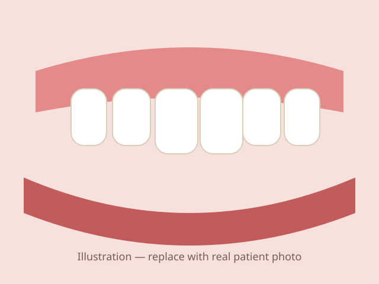
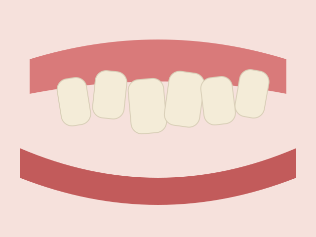
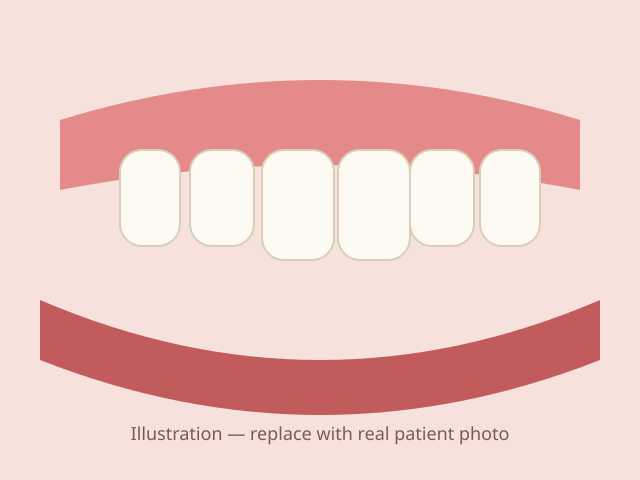
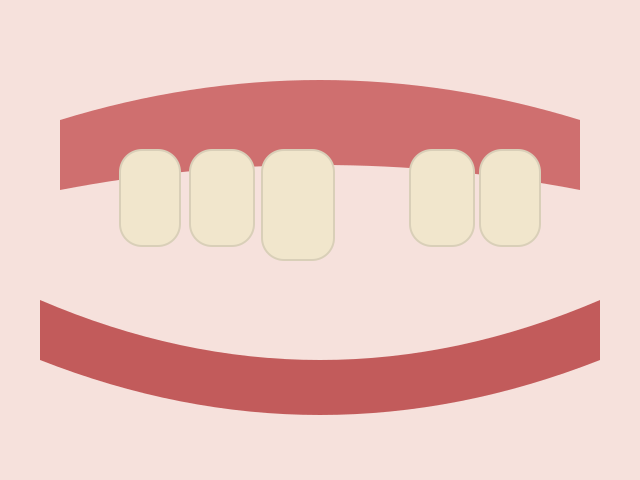
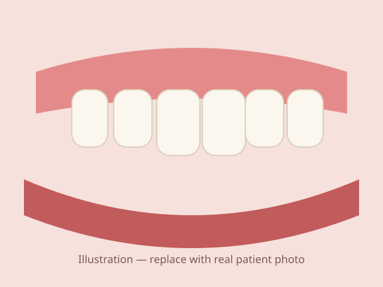
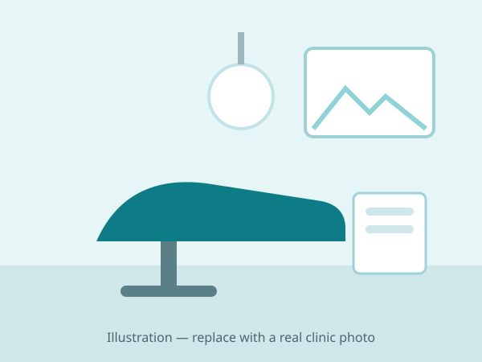

Check-up & Teeth Cleaning
Oral prophylaxis, scaling and a full check-up to keep teeth and gums healthy. Looking for teeth cleaning near me? Start here.
Book check-upGentle, modern and affordable dental care at Dentist Pro in Nabitasan, La Paz. From teeth cleaning and fillings to braces, root canal and dentures — everything your family's smile needs, close to home.

Complete general, cosmetic and orthodontic dentistry in one clinic — so you never have to search "dentist near me" again.
Oral prophylaxis, scaling and a full check-up to keep teeth and gums healthy. Looking for teeth cleaning near me? Start here.
Book check-upTooth-coloured composite fillings that repair cavities and chipped teeth while looking natural.
Book tooth fillingsSave an infected or badly decayed tooth and stop the pain instead of having it pulled.
Book root canal treatmentGentle simple and surgical extractions, including impacted wisdom teeth (odontectomy).
Book tooth extractionMetal, ceramic and self-ligating braces plus retainers to straighten teeth and fix your bite.
Book bracesProfessional in-clinic and take-home whitening for a brighter smile, safely.
Book teeth whiteningThin composite or porcelain shells that reshape and brighten front teeth.
Book veneersComplete and partial dentures — including flexible dentures — to restore your smile and chewing.
Book denturesReplace missing or broken teeth with fixed crowns, bridges or dental implants.
Book crowns, bridgesKid-friendly check-ups, fluoride and sealants. A patient pediatric dentist near me for your little ones.
Book pediatric dentistryTap your concern and we'll match you with the right treatment. Not sure? Book a consultation and we'll check for you.
Throbbing pain, swelling or a tooth that hurts when you bite.
→ Check-up, filling or root canalGums that bleed when brushing can be an early sign of gum disease.
→ Deep cleaning & gum careCrowding, gaps, overbite or underbite affecting your confidence.
→ Braces or veneersCoffee, tea and smoking stains that brushing won't remove.
→ Cleaning & whiteningGaps that make chewing hard or make you hide your smile.
→ Dentures, bridge or implantSharp twinges with cold drinks, sweets or brushing.
→ Desensitizing or fillingsPersistent bad breath despite brushing and mouthwash.
→ Cleaning & oral examNervous about the dentist? We go slow and explain every step.
→ Gentle, no-pressure visitDrag the slider to compare. Results like these are what our Iloilo patients come back to us for.


BeforeAfterStained, yellowed teeth brightened with a professional in-clinic whitening session.


BeforeAfterCrowded, crooked teeth aligned with braces over a personalised treatment plan.


BeforeAfterA front-tooth gap restored with a natural-looking fixed replacement.
Images are illustrations — replace with actual patient photos shared with written consent. Individual results vary.
Your health is in qualified hands. Here's why patients across Iloilo trust Dentist Pro.
Every dentist on our team holds a valid Professional Regulation Commission (PRC) license.
Active members of the PDA — Iloilo Chapter, committed to ethical, up-to-date practice.
Autoclave-sterilized instruments, single-use disposables and DOH infection-control protocols.
Regular trainings in orthodontics, endodontics and cosmetic dentistry. [Add your certificates]
Selected HMOs accepted. Cash, GCash and installment options for major treatments. [Confirm list]
Clear explanations, transparent pricing and a calm clinic for anxious patients and kids.
| Dentist | PRC License No. | Specialisation | Membership |
|---|---|---|---|
| Dr. [DENTIST NAME], DMD | [PRC NO.] | General & Cosmetic Dentistry | Philippine Dental Association |
| Dr. [DENTIST NAME], DMD | [PRC NO.] | Orthodontics | Philippine Dental Association |
We use genuine, FDA-registered products and materials from established dental brands — for safer treatment and longer-lasting results.

Dentist Pro was built on a simple idea: everyone in Iloilo deserves a dentist they can trust, close to home. From our clinic in Nabitasan, La Paz, we care for children, students, working professionals and seniors from every corner of Metro Iloilo.
We take time to listen, explain your options in plain language, and give you a clear price before we start — so there are no surprises.
Lead Dentist · PRC Lic. No. [PRC NO.]
Sample review — replace with a real Google review. Very gentle cleaning and the dentist explained everything clearly.
Sample review — replace with a real Google review. Got my braces here and the monthly adjustments are always on time.
Sample review — replace with a real Google review. They took my child's toothache case the same day. Highly recommended!
Fill out the form and we'll call or text you to confirm your schedule — usually within the same day during clinic hours.
Prefer to call?
Call / Text 0993 495 3526
Patients visit us from every district of Iloilo City and nearby towns. Choose your area for directions and local info.
Searching for a dental clinic near me? We're easy to reach from anywhere in Metro Iloilo.
| Monday – Friday | 9:00 AM – 6:00 PM |
| Saturday | 9:00 AM – 5:00 PM |
| Sunday | By appointment |
Dentist Pro is located at Nabitasan, La Paz, Iloilo City. We are a short ride from Jaro, Lapuz, Mandurriao, City Proper and Molo, and we welcome patients from all over Metro Iloilo. Tap "Get Directions" on this page for the fastest route.
Yes, walk-ins are welcome when a slot is available, but booking ahead guarantees your time. Call or text 0993 495 3526 or use the appointment form and we'll confirm your schedule.
Yes. Dentist Pro is open on Saturdays, and Sunday visits are available by appointment — ideal if you work or study on weekdays.
If you need an emergency dentist near me for severe toothache, swelling, a broken tooth or a knocked-out tooth, call us right away. We prioritise urgent cases and will advise you on what to do before you arrive.
Prices depend on your needs, so we give you a clear quote after your check-up — no surprise fees. Message us for current rates and ask about installment options for braces, dentures and other larger treatments.
We accept selected HMO and dental plans. Contact us with your HMO name so we can confirm your coverage before your visit.
Call, text or book online — our friendly team in La Paz, Iloilo City is ready to help.